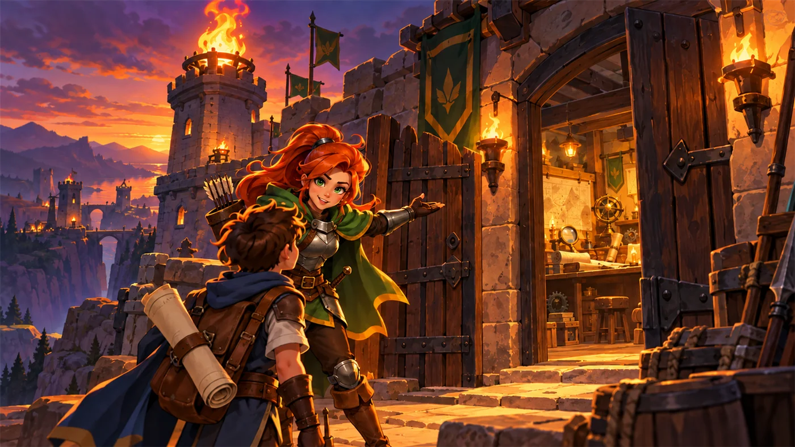
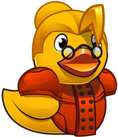
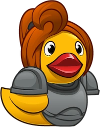
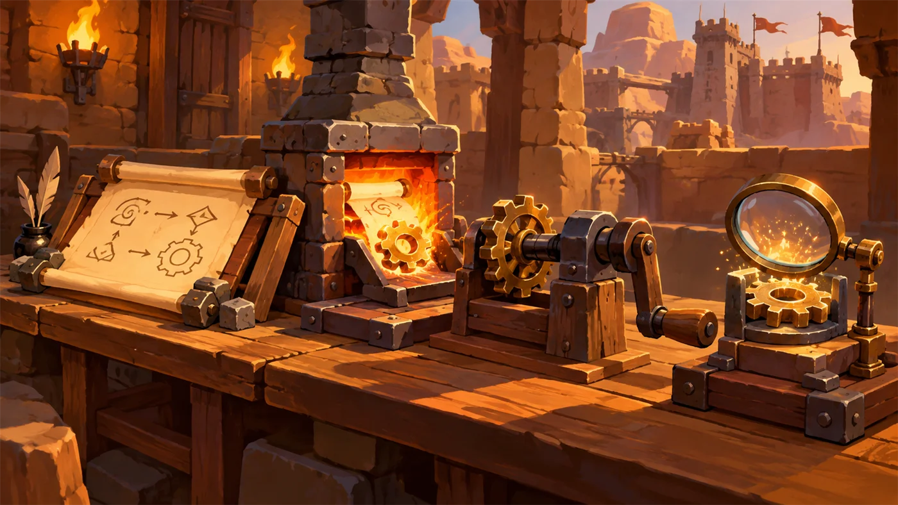
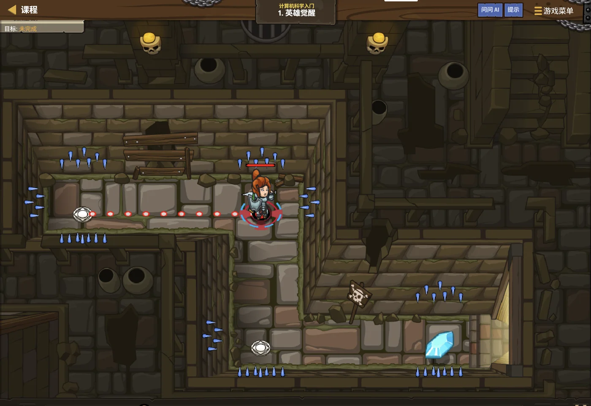
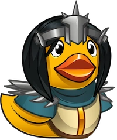

哨火初燃 计算机基础与开发环境
这里是烛火岗哨。安雅把一张通行证拍在你肩上，从今天起，你是守夜人。 不过在点灯之前，得先弄明白一件事——你到底在用什么在写代码？

0 单元导语与目标
0.1 学习目标
1学完这个单元，你将能……
- 说出计算机的五大组成部件，并分清哪些是输入设备、哪些是输出设备
- 讲清计算机发展的四个时代，以及划分时代的依据
- 说明"程序""指令""编程语言"分别是什么
- 说出机器语言、汇编语言、高级语言的区别
- 熟练使用 IDE 完成"新建 → 编辑 → 保存 → 运行 → 调试"
- 写出并运行你的第一个 Python 程序
2对标 GESP 考纲（Python 一级）
- （1）了解操作系统的基本概念及常见操作，了解计算机硬件的基本组成结构
- （2）了解计算机网络协议和互联网的基本概念
- （3）了解计算机语言的基本概念与转换，掌握编程文件创建、复制、粘贴、删除、移动和调试的基本操作
- （4）掌握编程语言开发环境的使用
- 考核目标：对计算机系统的编程软件界面有认识、能完成基本操作
0.2 考纲对照
这一单元是整套 Python 一级的起点，它不讲语法，只讲"环境与常识"。 但别小看它——在一级真题里，单选题的第 1、2 题几乎都在这个范围内出题。
| 本单元小节 | 对应考纲条目 | 真题常考形式 |
|---|---|---|
| 1 计算机组成 | 硬件的基本组成结构 | 判断某设备是输入还是输出设备 |
| 2 发展历程 | 计算机的历史 | 四个时代的划分依据 |
| 3 程序与语言 | 计算机语言的基本概念 | 机器语言 / 汇编 / 高级语言的区别 |
| 4 开发环境 | IDE 的使用、文件基本操作 | IDE 能做什么、不能做什么 |
1 计算机长什么样
1.1 五大部件
岗哨的机械师把一台老式"运算机"拆给你看。他说：别看它复杂，拆开来只有五样东西。
| 部件 | 作用 | 常见例子 |
|---|---|---|
| 输入设备 | 把外面的信息送进计算机 | 键盘、鼠标、扫描仪、摄像头、麦克风、触摸屏 |
| 运算器 | 做算术运算和逻辑运算 | 与控制器一起封装在 CPU 里 |
| 控制器 | 指挥各个部件按顺序工作 | 与运算器一起封装在 CPU 里 |
| 存储器 | 保存数据和程序 | 内存（RAM）、硬盘、U 盘、光盘 |
| 输出设备 | 把结果送出去给人看 | 显示器、打印机、音箱、投影仪 |
① 触摸屏既是输入设备，也是输出设备（你点它是输入，它显示是输出）；
② 硬盘属于存储器，不属于输出设备（虽然它能把内容"存出去"，但它的本职是"记"）；
③ CPU 不是一个部件，而是运算器 + 控制器两部分合起来的称呼。

1.2 硬件与软件
硬件（Hardware）是你摸得到的部分：主机、显示器、键盘、鼠标。 软件（Software）是你摸不到的部分：装在里面、指挥硬件干活的一套套程序。
| 类别 | 是什么 | 例子 |
|---|---|---|
| 硬件 | 看得见、摸得着的物理设备 | CPU、内存条、硬盘、显示器、键盘 |
| 系统软件 | 管理整台机器的最底层软件 | Windows、Linux、macOS 操作系统 |
| 应用软件 | 为我们做具体事情的软件 | 浏览器、画图工具、Python 开发环境 |
1.3 操作系统与常用操作
操作系统（Operating System，简称 OS）是管理计算机硬件的系统软件， 它替你把 CPU、内存、硬盘、设备都管起来，你才能在它上面装软件、开文件。
常见操作系统：Windows（我们最常用的）、Linux（服务器上最常见）、 macOS（苹果电脑）、Android / iOS（手机上的）。
在写程序之前，你至少要熟练这些操作（考纲要求"掌握编程文件创建、复制、粘贴、删除、移动"）：
| 操作 | Windows 快捷键 | 用途 |
|---|---|---|
| 新建文件夹 | Ctrl + Shift + N | 给代码文件安个家 |
| 复制 | Ctrl + C | 备份代码 |
| 粘贴 | Ctrl + V | 把备份放回别处 |
| 剪切（移动） | Ctrl + X | 把文件挪到别的位置 |
| 删除 | Delete | 删掉不要的文件 |
| 重命名 | F2 | 给文件改名（注意保留扩展名） |
| 保存 | Ctrl + S | 写代码时最常用的一个键 |
你敲键盘是"收"，CPU 算数是"想"，硬盘存东西是"记"，屏幕亮起来是"说"。
所以别怕它。它一点都不聪明，它只是特别听话、特别快。
2 计算机的四代
2.1 四个时代
岗哨的档案室里挂着一张长长的年表。安雅指着它说：计算机不是一天长成现在这样的，它换过四次'心脏'。
| 时代 | 时间 | 核心元器件 | 特点（了解即可） |
|---|---|---|---|
| 第一代 | 1946 — 1958 | 电子管 | 体积巨大、耗电惊人、速度慢 |
| 第二代 | 1958 — 1964 | 晶体管 | 比电子管小得多、更可靠 |
| 第三代 | 1965 — 1970 | 中小规模集成电路 | 多个元件做在一块芯片上 |
| 第四代 | 1971 — 至今 | 大规模 / 超大规模集成电路 | 一台电脑塞进一块芯片，个人电脑普及 |
2.2 划分依据
这是真题原题考过的点，一定要记牢：
计算机也是这个道理：不是越大越厉害。 从电子管到晶体管，一代比一代小，一代比一代快。
所以别问"哪一代最猛"，要问"它换了什么心脏"。
3 什么是程序
3.1 程序与指令
岗哨塔顶的哨火为什么能整夜不灭？因为有个人给它编了一整套"值夜流程"： 几点添柴、几点拨芯、火小了怎么办。这套流程一旦写下来，换谁值班都能照做。
计算机里的程序（Program）就是这样一套"流程"：
- 指令（Instruction）：一条一条明确的、计算机能听懂的命令，例如"把 3 和 4 加起来"
- 程序：按一定顺序排列起来的一串指令，用来完成某项任务
请特别注意：计算机不会自己思考。它只会一件事——照着指令一条条执行。 所以程序的顺序、条件、次数，都必须由你写清楚。
3.2 编程语言的三个层次
问题是：计算机只认电信号的开与关（用 0 和 1 表示）。 而你不可能用 0 和 1 写一整个游戏。于是人类造了三种"语言"来过渡：
| 语言层次 | 由什么组成 | 计算机能直接执行吗 | 需要什么翻译 |
|---|---|---|---|
| 机器语言 | 二进制指令（0 和 1） | 能，直接执行 | 不需要 |
| 汇编语言 | 助记符号 | 不能 | 汇编器（Assembler） |
| 高级语言 | 接近自然语言的语句 | 不能 | 编译或解释 |
编译（Compile）：整份程序一次性翻译成机器语言，生成一个可执行文件再运行。C++ 用这种方式。
解释（Interpret）：一行一行地翻译、一行一行地执行。Python 用这种方式， 所以改动后立刻就能看到结果，非常适合初学和调试。
3.3 为什么选 Python
岗哨的每个人都在用不同的工具：塔林用重剑、娜莉亚用长弓、贺舒曼用法杖。 编程语言也一样，各有擅长。Python 是其中最适合初学者的那一把。
| 特点 | 说明 |
|---|---|
| 语法接近英语与数学 | 读起来像句子，例如 if score > 60: 几乎不用翻译 |
| 靠缩进组织代码 | 不需要分号和大括号，靠"缩进"表示层级——这也是最容易出错的地方 |
| 解释执行 | 写完立刻运行，改一行马上见效 |
| 库非常丰富 | 想画图有 turtle，想算数学有 math，不必从零造轮子 |
4 开发环境 IDE
4.1 IDE 的五件事
你不可能对着记事本写代码——那太容易出错。岗哨给你配了一整套"写字台"， 它把写代码需要的工具都装在一个窗口里，这就是 IDE（集成开发环境，Integrated Development Environment）。

4.2 第一个程序
现在，打开岗哨配给你的开发环境，我们点亮第一行字。
print("哨火不熄，守夜不止")逐字拆开看这一行：
| 部分 | 名称 | 作用 |
|---|---|---|
print | 函数名 | 告诉 Python：把下面的东西显示出来 |
( ) | 圆括号 | 函数要处理的内容写在括号里，必须是英文括号 |
"…" | 字符串 | 一对引号括起来的一段文字，引号也要用英文的 |
① 圆括号、双引号必须是英文半角符号。写成中文的
（） 或 “”，程序会直接报错；②
print 四个字母全是小写。写成 Print、PRINT 都不认识；③ 括号、引号要成对出现，少一个就报错。
4.3 保存与运行
写完之后按这个顺序操作（这就是考纲要求的"创建文件、编辑文件、保存文件、编译/解释、调试"）：
| 步骤 | 操作 | 注意事项 |
|---|---|---|
| 1 新建 | 在 IDE 里新建一个文件 | Python 文件的后缀名是 .py |
| 2 编辑 | 把上面的代码敲进去 | 注意英文符号与缩进 |
| 3 保存 | 按 Ctrl + S，命名如 hello.py | 文件名要用英文或拼音，别用中文和空格 |
| 4 运行 | 按 F5 或点击"运行"按钮 | IDE 会解释并执行这段代码 |
| 5 看结果 | 在下方输出区看结果 | 如果没显示，多半是没保存就运行了 |
Ctrl + S 再运行。

5 代码实战
这一关是所有扣哒世界冒险的第一关。别看它只有三行代码，你会在里面第一次真切感受到：是程序在指挥角色。
英雄觉醒
进入关卡 →
思路：先看一眼上面的关卡实况——走廊很短，尖刺就在旁边。 你要做的只有三格移动：向右、向下、再向右。
hero.moveRight() # 让英雄向右走一格
hero.moveDown() # 让英雄向下走一格moveRight() 换成
moveDown()、moveUp()、moveLeft()，英雄就能朝四个方向走。路线上还差最后一步向右——这一格留给你自己补上。
注意这个写法：hero.moveRight()。它由三部分组成——
| 部分 | 含义 |
|---|---|
hero | 对象：我们的主角，英雄 |
. | 点号：表示"我要对它做点什么" |
moveRight() | 方法：向右移动一格 |
hero.findNearestEnemy()、hero.moveXY(20, 34)，
全都是"对象.方法(参数)"这同一个模子刻出来的。
6 常见陷阱

print("你好") 写成了 print（“你好”）。
print("你好")print 写成 Print 或 PRINT。
print、Print、PRINT 在它眼里是三个完全不同的名字。
你把主角的名字写错一个字，他还认得出你吗？print 全小写；之后学的 True、False、None 则是首字母大写
Ctrl + S
hello.py、my_first.py。
中文名在某些环境下会变成乱码，空格更是会直接让路径断成两截。hello.py test01.py my_first_program.pyhello.py 改名成 hello，系统不知道它是 Python 文件。
.py；在文件夹选项里勾选"显示文件扩展名"7 题目练习
下面 5 道题中，前 2 道改编自 GESP 真题（情境改写为扣哒世界，考点完全一致），后 3 道为原创练习题。先自己做，再点开看详解。
B.可以提供辅助信息，帮助排查程序逻辑错误
C.可以直接控制巡逻机器人的电机转动
D.支持语法高亮，使代码更易阅读
查看答案与详解
对应小节4.1 IDE 的五件事。
查看答案与详解
对应小节2.2 划分依据。
B.显示器、打印机、音箱
C.硬盘、U 盘、内存条
D.摄像头、投影仪、键盘
查看答案与详解
B 项全部是输出设备；
C 项是存储设备，既不是纯粹的输入也不是输出；
D 项中"投影仪"是输出设备，混进来就不对了。
小技巧：问自己一句"信息是进来还是出去"——进来的是输入，出去的是输出，装东西的是存储。
对应小节1.1 五大部件。
查看答案与详解
对应小节3.2 编程语言的三个层次。
哨火不熄，第二行是 守夜不止。查看参考答案与要点
print("哨火不熄")
print("守夜不止")
要点：
① 每一个 print() 会输出一行，写完自动换行；
② 两行代码都不能缩进，必须顶格写在最左边；
③ 引号、括号都要用英文半角。
对应小节4.2 第一个程序；4.3 保存与运行。
8 本单元小结
你在岗哨门口学到了什么
- 五大部件——输入设备、运算器、控制器、存储器、输出设备；运算器与控制器合称 CPU。
- 硬件与软件——摸得到的是硬件；系统软件管全局，应用软件办具体事。
- 操作系统——Windows / Linux / macOS / Android / iOS；文件的新建、复制、移动、删除、改名要熟练。
- 四个时代——电子管 → 晶体管 → 中小规模集成电路 → 大规模集成电路；划分依据是核心元器件。
- 程序与语言——指令组成程序；机器语言 → 汇编语言 → 高级语言；Python 靠"解释"执行。
- IDE——新建、编辑、保存、运行、调试；它能辅助写代码，但不能直接控制硬件。